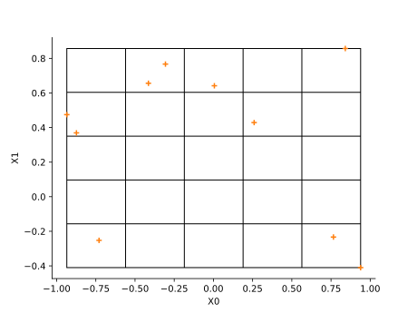
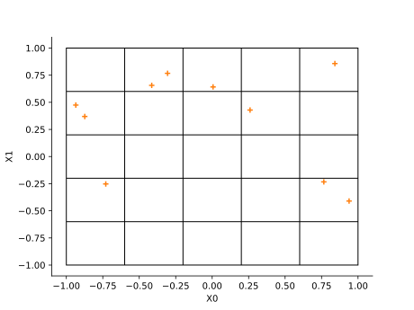
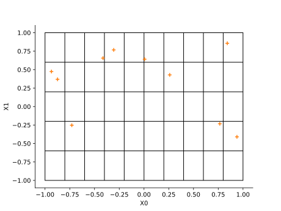
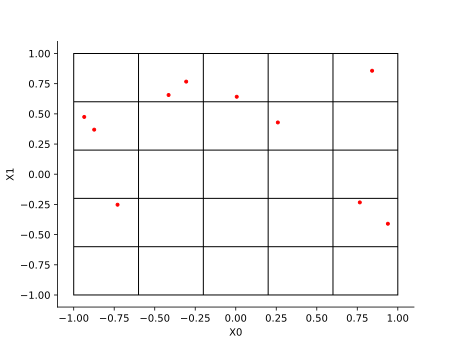
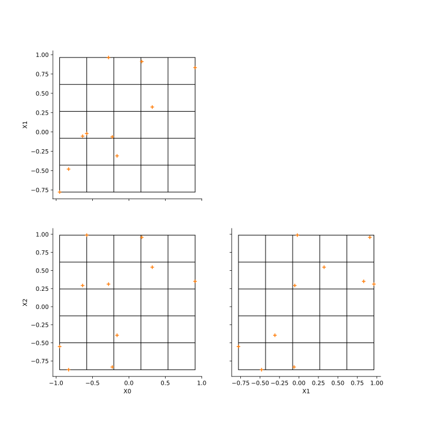
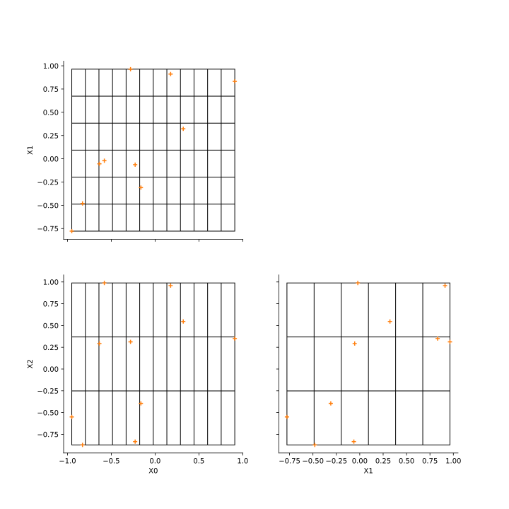
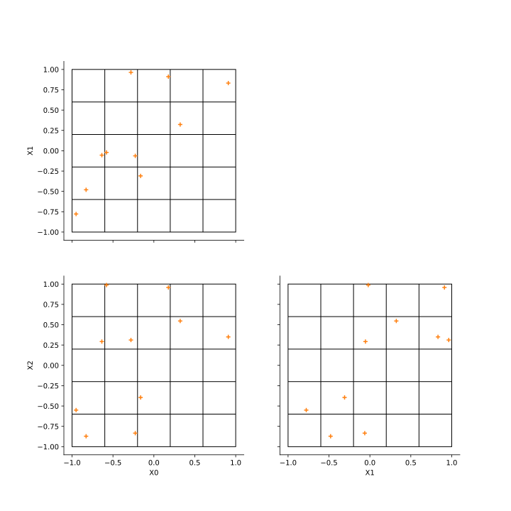

Note
Go to the end to download the full example code.
The DrawPairsWithGrid method¶
The goal of this example is to present the features of the DrawPairsWithGrid method.
Distribution¶
import openturns as ot
import openturns.viewer as otv
In two dimensions¶
dim = 2
X = [ot.Uniform()] * dim
distribution = ot.JointDistribution(X)
sampleSize = 10
sample = distribution.getSample(sampleSize)
With default parameters the bounds are computed from the sample and 5 subdivisions are used in each direction.

Set the bounds.

Configure the number of subdivisions in each direction.

Configure the marker.

In three dimensions¶
dim = 3
X = [ot.Uniform()] * dim
distribution = ot.JointDistribution(X)
sampleSize = 10
sample = distribution.getSample(sampleSize)
grid = ot.VisualTest.DrawPairsWithGrid(sample)
view = otv.View(grid)
view.getFigure().set_size_inches(10, 10)

Configure the number of subdivisions.
grid = ot.VisualTest.DrawPairsWithGrid(sample, ot.Interval(), [12, 6, 3])
view = otv.View(grid)
view.getFigure().set_size_inches(10, 10)

Configure the bounds.
bounds = distribution.getRange()
grid = ot.VisualTest.DrawPairsWithGrid(sample, bounds)
view = otv.View(grid)
view.getFigure().set_size_inches(10, 10)

Display all figures